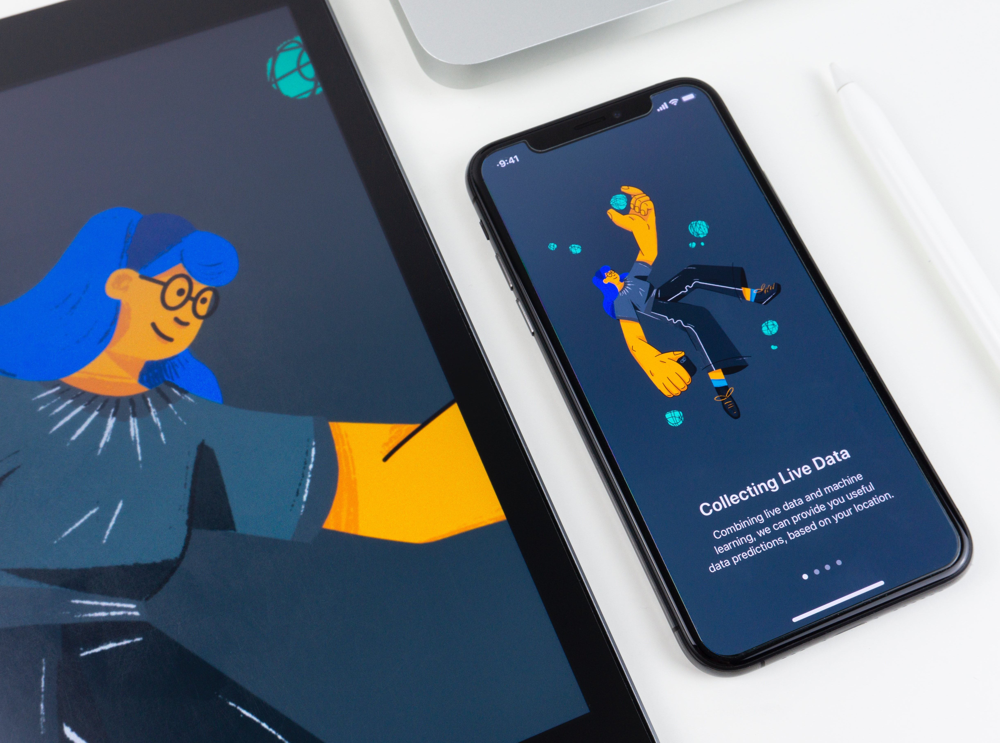

Photo by
Balázs
Kétyi on
Unsplash
Overview
- MVX (MVC, MVVM, MVP, MVU, …)
- Mobile-only Architecture
- General Software Architecture
MVX
- Not an Architecture but a high-level design pattern
- Not sufficient for non trivial apps
- May be combined with a software architecture
Mobile-only Architecture
- Often OS specific
- Often tightly integrated with only one shape of MVX
Software Architecture
- Not clear if fitting for mobile applications
- Scant research
Choosing a Software Architecture
Overview
- BCE (Boundary-Control-Entity)
- DDD (Domain Driven Design)
- Hexagonal Architecture (aka Ports and Adapters)
- Onion Architecture
- Clean Architecture
Clean Architecture
- Very popular
- Many misleading mobile implementations
Hexagonal Architecture
- Shares base with clean architecture
- Easy to implement and extend
Considerations for Mobile
Overview
- Modularity
- Dependencies
- Concurrency
- Platform Dependency
Modularity
- Seperate into packages
- Use built-in approach
Dependencies
Either
- Dependency Injection Framework
- Manually configurable dependencies
Concurrency
- Use newest built-in general approach
- Should be part of the ports
- Most mobile applications should use a software architecture
- Hexagonal Architecture is recommended
- Achieves architectural goals
- Flexible
- Extendible
- Mobile specific challenges can be addressed